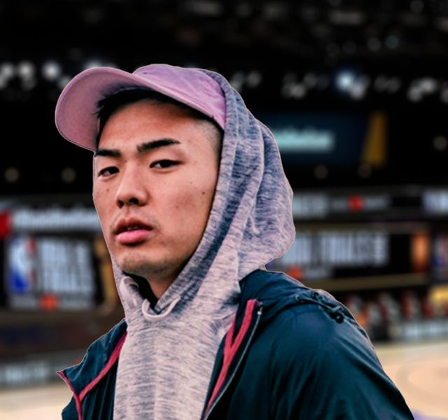

NBA JAPAN
NBA Japan 公式
NBAの発信に切り替えてから1年〜1年半ほどで、NBA公式とも仕事をするように。NBA Japan の YouTube にアップするショート動画でも、NBAの話題を届けてきた。
STARTING 5IVEMEMBER 01
NEW YORK BORN. NEW YORK RAISED.ニューヨーク生まれ、ニューヨーク育ちの関西系アメリカ人。現地のNBAを、日本の視聴者へわかりやすく届けてきたYouTubeクリエイター。
YouTubeチャンネルを見るRikuto AF ・ @rikutoaf ・ 登録者数 9.75万人（2026年11月時点）YouTubeクリエイター（Rikuto AF）／ニューヨーク発のNBA発信
音楽活動などを通じて、バスケとヒップホップのカルチャーも広めてきた。

物心がついた頃から、大のNBAファン。なかでも思いが強いのは、地元ニューヨーク・ニックス。2015年に始めたYouTubeは、もともとはラップで英語を教える英会話チャンネル。会社員として働きながら、4年ほど続けていた。
八村塁のNBAドラフトが近づいていた頃。「どんな仕事をしたいのか」を考え直し、自分が持っているもので何ができるかを考えた。
出した答えは、チャンネルをNBAの発信へ100%切り替えること。1年間は収入がなくても暮らせるだけの貯金をしてから、26歳で会社を辞めて専念した。
チャンネル名は2018年から「Rikuto AF」。現地のNBA情報を、日本の視聴者にわかりやすく伝える動画を届け、切り替えから1年〜1年半ほどで、NBA公式とも仕事をするようになった。
動画の挨拶は「こんにちHA」、締めは「でHAでHA平和」。ニックスを追うサブチャンネル「NYK再建プロジェクト」や、NBA JapanのYouTubeにアップするショート動画でも発信してきた。
THE FILE
出典: 2K Japan『NBA 2K21』発表の紹介文（ファミ通.com 2020年12月21日）、Rikuto AF の YouTube 投稿、TuneCore Japan、STARTING 5IVE「【リクト】HIPHOPとバスケを繋げる存在になりたい。」（2024年7月）。
NBAの発信に切り替えてから1年〜1年半ほどで、NBA公式とも仕事をするように。NBA Japan の YouTube にアップするショート動画でも、NBAの話題を届けてきた。
2020年12月、2K Japan が公開した次世代機版『NBA 2K21』の日本オリジナルムービーに出演。同作の日本公式アンバサダー・八村塁とゲームで対決し、次世代機版の魅力と新要素を紹介するコーナーも担当した。動画を見る ↓
2026年3月には、STARTING 5IVE のチャンネルで 2K Japan とのタイアップ企画『NBA 2K26』の長尺動画4本を公開。コラボ実績を見る →
出典: STARTING 5IVE「【リクト】HIPHOPとバスケを繋げる存在になりたい。」、Rikuto AF の YouTube 投稿、ファミ通.com 2020年12月21日、STARTING 5IVE『NBA 2K26』タイアップ第1回。
STARTING 5IVE 初期のメンバー紹介回。NBAの発信を始めたきっかけから、ヒップホップとバスケへの想い、これからの目標までを語った。
ニューヨークで育つと、バスケ好きは遊びでラップもする。カフェテリアで机を叩いてビートを作り、その上でふざけてフリースタイル。2024年の動画の時点で「15年ぐらい前から」、自分で曲も作るようになった。本物のラッパーをリスペクトしているからこそ、自分から「ラッパーです」とは名乗れなかったという。
アメリカではバスケもヒップホップも70年代に広がり、90年代にはどちらも「ゴールデンエイジ」と呼ばれる時代を迎えた。強く結びついているからこそ、ぶれずに両方とも伸びてきた——それがリクトの見方。日本でもヒップホップとバスケはどちらも人気で、合わされば、さらに強くなると考えている。
バスケとヒップホップをしっかり繋いでくれるアーティストが出てきたら応援したい。そう思って5〜6年待っていたが、待っていても仕方がない。自分で取り組むことを決めた。
バスケとNBAをコンセプトにした、ミュージックアルバムを出す。
バスケファンが楽しめるのはもちろん、ヒップホップが好きな人がバスケに興味を持ってくれるような作品に。欲を言えば、日本代表の選手が「試合前に聴いているのはリクトの曲です」と言ってくれるところまで届けたい。
出典: STARTING 5IVE「【リクト】HIPHOPとバスケを繋げる存在になりたい。」（2024年7月20日公開）
TO BE CONTINUED…
2026年、リクトはYouTubeの投稿で、個人チャンネルの動画とSNSをしばらく非公開にすると告知した。目標は、2027年の頭にアップデート動画とともに動画とSNSを再公開すること。
そのあいだも、Xではときどき気分転換にNBAの話題を発信するとしている。
次世代機版『NBA 2K21』日本オリジナルムービー「次世代ゲームが現実を超える⁉」
2K Japan ・ 2020年12月 ・ 八村塁と対戦Rikutoさんとフリーエージェントたちについて語る!!!【リッキー&ニッキー】
ニコラス武 ・ 2019年6月【Rikuto x Bamba】Jalen Brunsonについて語り合う（前編）
Ballin' with Bamba ・ 2023年1月※ 個人チャンネルの動画は現在非公開のため、ほかのチャンネルで公開中の出演回を再生回数順に並べている。再生回数は2026年11月時点。STARTING 5IVE のリクト回（2.0万回再生）はISSUE #03 で紹介。
最初は、ラップで英語を教える英会話チャンネルとして。会社員として働きながら続けた。
いまのチャンネル名になる。のちにNBAの発信へ100%切り替え、会社を辞めて専念する（くわしく ↑）。
のちに STARTING 5IVE でともに活動するニコラス武のチャンネルで、フリーエージェントを語る。動画を見る →
リリース後には、参加アーティストたちが Rikuto AF のチャンネルのライブ機能でライブコンサートを配信した。
次世代機版『NBA 2K21』の日本オリジナルムービーに出演し、八村塁とゲームで対決。特別ルールのもと勝利した。動画を見る →
Ballin' with Bamba のチャンネルで、ニックスのジェイレン・ブランソンについて前後編で語り合う。動画を見る →
「HIPHOPとバスケを繋げる存在になりたい。」——自身の思いを語った回。動画を見る →
2027年の頭の再公開を目標に、個人での発信をいったん休んでいる。
個人でコツコツ続けるのもいい。でも、合わさった時にこそ芯の強さが出る——チームづくりで「ビッグ3」が結成されて王朝が生まれるように。それぞれが何年も自分の道をつくってきた5人なら。そう考えていた時にクリスと出会い、ずっと考えていたこの話をした。クリスがそのロブパスを受けてダンクするように、みんなに声をかけて STARTING 5IVE が始まった。
NBAで好きなのは、スーパースターよりロールプレイヤー。いろんな状況にアジャストでき、長くプレーし続けられる選手に惹かれてきた。STARTING 5IVE も、トレンドの波にうまく乗りながら長く続き、振り返った時に「あの5人、ずっといるな」と言われるグループになりたいという。
これからもバスケ、NBAの面白さを、みんなで広めていきましょう。
でHAでHA平和2024年7月のメンバー紹介回、締めの言葉
WORK — お仕事のご依頼
現在は個人でのご依頼は受け付けておりません。
STARTING 5IVE（5人）へのご依頼はチームの相談窓口から →
オープニングの写真: Wikimedia Commons より